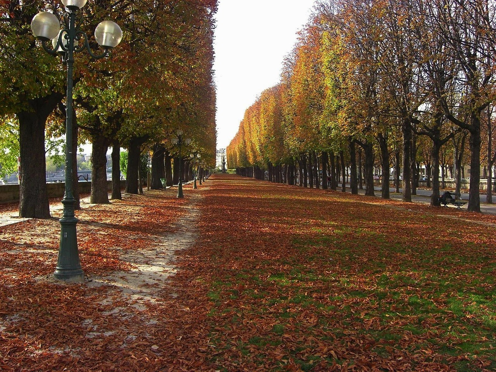
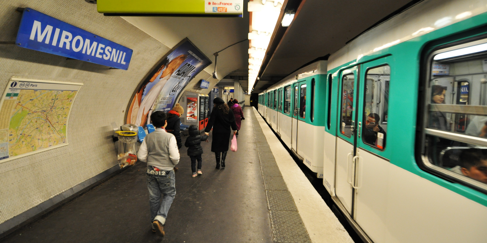
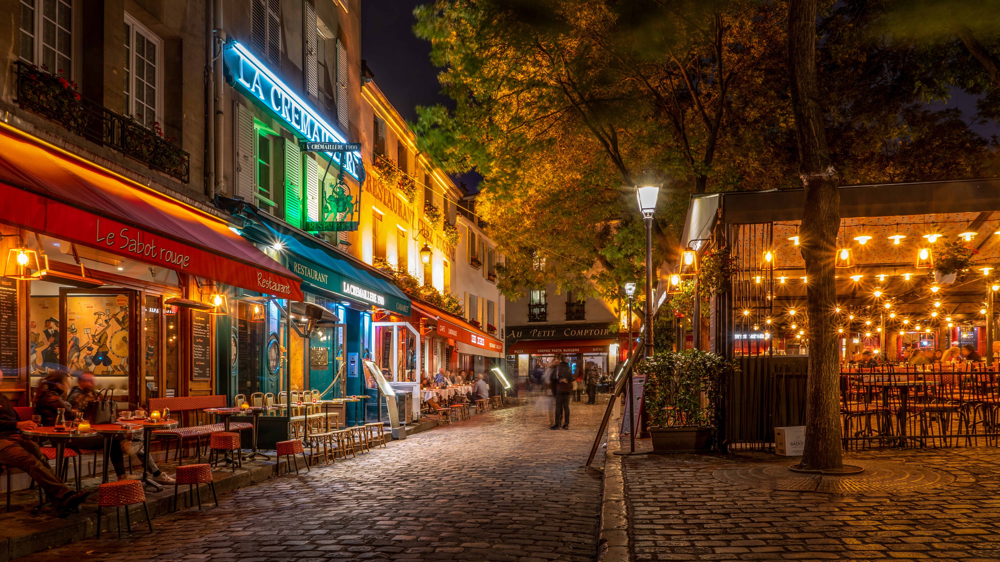
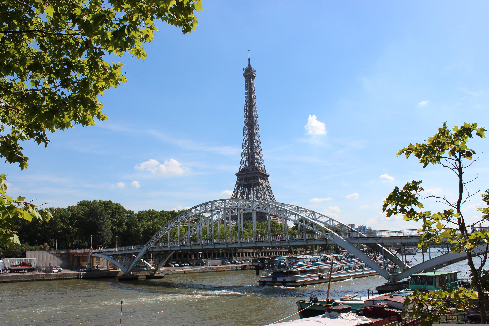

Guía para Turistas en París

Mejor época para viajar
La primavera y el otoño son consideradas las mejores épocas para visitar París debido a que el clima suele ser más agradable y hay una menor cantidad de turistas en comparación con el verano. Durante la primavera, entre marzo y mayo, la ciudad se llena de flores y parques coloridos, creando paisajes ideales para caminar y disfrutar de lugares como Jardín de Luxemburgo o pasear junto al Río Sena.
En otoño, especialmente entre septiembre y noviembre, París ofrece temperaturas frescas y un ambiente más tranquilo. Las calles y jardines adquieren tonos dorados y rojizos que hacen que la ciudad tenga un aspecto muy romántico y acogedor. Además, al haber menos visitantes, es más fácil recorrer museos, cafeterías y sitios turísticos sin largas filas, lo que permite disfrutar mejor de la experiencia.

Transporte
El metro es considerado el mejor medio de transporte para los turistas en París gracias a que es rápido, económico y cuenta con una red muy extensa de 16 líneas que conectan prácticamente toda la ciudad y sus principales atractivos turísticos. Además, permite evitar el tráfico y desplazarse de manera eficiente entre lugares como Torre Eiffel, Museo del Louvre y Arco del Triunfo. Las estaciones suelen estar bien señalizadas, por lo que es una opción cómoda incluso para quienes visitan París por primera vez.
Para las estancias cortas, la tarjeta Navigo Easy es una de las opciones más recomendadas, ya que permite recargar viajes individuales o pases diarios de forma sencilla y práctica. Por otro lado, el pase Navigo Semaine, con duración semanal, resulta más conveniente para quienes planean quedarse más de tres días y utilizar el transporte frecuentemente. Además del metro, París también cuenta con autobuses y tranvías que permiten disfrutar del paisaje urbano durante el recorrido, ofreciendo una experiencia diferente para conocer la ciudad.

Gastronomía
París ofrece una experiencia gastronómica inigualable, combinando alta cocina, bistrós históricos y comida callejera deliciosa.
Aquí tienes una guía organizada para disfrutar de la comida en París:
Restaurantes Icónicos y Asequibles (Bouillons y Bistrós)
- Bouillon Chartier (Opera/Montparnasse): Un clásico histórico con techos altos y precios muy bajos, ideal para cocina francesa tradicional.
- Bouillon Julien: Precioso ambiente art nouveau con buena comida asequible.
- Bistrot Victoires: Ambiente auténtico cerca del Louvre, ideal para comer el famoso steak frites.
- Relais de l'Entrecôte: Famoso por su menú único de filete con salsa secreta y patatas fritas.
- Au Pied de Cochon: Famoso por su sopa de cebolla francesa, abierto casi las 24 horas.

Lugares recomendados
Además de los lugares más famosos, París también tiene sitios menos conocidos que muestran una cara más tranquila y auténtica de la ciudad. Uno de ellos es La Campagne à Paris, un pequeño barrio con calles adoquinadas y casas coloridas que parece un pueblo escondido dentro de París. Otro lugar especial es Parc des Buttes-Chaumont, un parque lleno de colinas, puentes y hermosas vistas panorámicas.
También destaca Canal Saint-Martin, una zona perfecta para caminar y disfrutar de cafés y un ambiente bohemio junto al agua. Para quienes buscan lugares pintorescos, Rue Crémieux es una calle famosa por sus fachadas de colores pastel y su ambiente tranquilo, ideal para tomar fotografías y conocer una parte diferente de la ciudad.